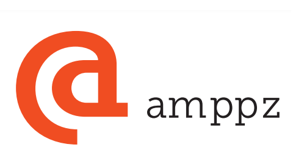

AMPPZ 2024
Nasz Wydział jak co roku wziął udział w Akademickch Mistrzostwach Polski w Programowaniu Zespołowym. 11 wystawionych przez nas drużyn przywiozło dwa złote, dwa srebrne i dwa brązowe medale. Zapraszamy do przeczytania relacji prof.Krzysztofa Diksa.

W dniu 17 listopada 20224 r., w sali widowiskowo-sportowej Wydziału Zarządzania UW, zostały rozegrane XXVIII Akademickie Mistrzostwa Polski w Programowaniu Zespołowym. W Mistrzostwach Polski ostatecznie wystartowały 63 drużyny reprezentujące 21 czołowych uczelni w Polsce kształcących informatyków. Stawkę dodatkowo uzupełniało 7 zespołów uczniowskich oraz 1 zespół sponsorski. Akademickim Mistrzem Polski w roku 2024 został znakomity zespół z Uniwersytetu Wrocławskiego, który jako jedyny rozwiązał 11 z 12 zadań przygotowanych przez organizatorów. Drugie miejsce zajął zespół z Uniwersytetu jagiellońskiego z 10 zadaniami. Tyle samo zadań, ale z gorszym czasem, rozwiązał Mateusz Radecki z naszego Wydziału, który jako jedyny startował w zespole jednoosobowym. Wszystkie pozostałe zespoły startujące w Mistrzostwach były trzyosobowe. W mistrzostwach przyznano 4 złote, 4 srebrne i 4 brązowe medale. Ostatni złoty medal zdobyli tegoroczni Akademiccy Mistrzowie Europy w Programowaniu Zespołowym, studenci naszego Wydziału: Arkadiusz Czarkowski, Bartłomiej Czarkowski oraz Tomasz Nowak. Byli oni najlepszą drużyną, która rozwiązała 9 zadań. Po 9 zadań zaliczyli także drużyny na miejscach 5 i 6. Miejsce piąte i pierwszy srebrny medal wywalczył zespól z naszego Wydziału w składzie: Piotr Blinowski, Jakub Dziura, Dominik Wawszczak. Miejsce 6. i 7. zajęły zespoły odpowiednio z Uniwersytetu Jagiellońskiego i Uniwersytetu Wrocławskiego. Ostatni srebrny medal, za ósme miejsce, zdobyli studenci Wydziału MIM – Jan Gwiazda, Kajetan Ramsza i Michał Szeliga. Miejsca od 9 do 12, zdobywając brązowe medale, zajęły zespoły reprezentujące: Uniwersytet Warszawski , Wydział MIM - Ivan Gechu, Adam Sołtan, Franciszek Witt i Jakub Koliński, Waldemar Lamandini, Olaf Targowski, oraz Uniwersytet Wrocławki. Tak więc na miejscach medalowych znalazło się 6 zespołów z naszego Wydziału. Należy jeszcze dodać, że pierwsze miejsce niemedalowe (trzynaste) zajął także zespól z naszego Wydziału – Jakub Pniewski, Kamil Szymczak i Hubert Wasilewski. Drużyny z miejsc od 7 do 11 rozwiązały po 8 zadań. Po 7 zadań rozwiązały drużyny na miejscach od 12 do 23, w tym kolejne 3 drużyny od nas. Ostatni zespół reprezentujący nasz Wydział rozwiązał 6 zadań i zajął 25 miejsce. Pełny ranking zawodów jest dostępny na stronie AMPPZ 2024 ranking. W tym miejscu chciałbym gorąco podziękować Kacprowi Klukowi oraz Arkowi Czarkowskiemu, którzy wspólnie organizowali treningi zespołów warszawskich przed tegorocznymi mistrzostwami Polski.
Mateusz, Arek, Bartek i Tomasz dwukrotnie startowali w finałach ICPC (mistrzostw świata) i w związku z tym nie mogą już nas reprezentować w zawodach eliminacyjnych do przyszłorocznych finałów, którymi dla nas są Akademickie Mistrzostwa Europy Środkowej w Programowaniu Zespołowym. Odbędą się one 15 grudnia we Wrocławie. Uniwersytet Warszawski będą reprezentować wszyscy nasi srebrni i brązowi medaliści oraz zespół, który w Warszawie wywalczył trzynaste miejsce.
Tegoroczne Mistrzostwa to także wielki sukces organizacyjny wzorowo współpracujących ze sobą Wydziałów Matematyki, Informatyki i Mechaniki oraz Zarządzania, jak też Fundacji Rozwoju Informatyki. Efekty tej współpracy można zobaczyć na zarejestrowanej transmisji z Mistrzostw, dostępnej na kanale YouTube https://www.youtube.com/live/<wbr></wbr>aVGnDVcmOM8.
Na nic znakomita organizacja, gdyby nie fantastyczne zadania zaproponowane i zaimplementowane przez zespół pod kierunkiem Kamila Dębowskiego, jak też niezawodny system konkursowy przygotowany przez zespół techniczny z Wydziału Zarządzania pod wodzą Marka Mossakowskiego i zespół studentów z naszego Wydziału we współpracy ze studentami z Uniwersytetu Wrocławskiego pod wspólnym kierownictwem Pawła Dietricha.
Tak wielkie wydarzenie nie mogłoby się odbyć bez zaangażowania instytucji wspierających: Huawei Warsaw Recearch Center, Ideas NCBR, Digital Technology Poland, neptune.ai, ElenevenLabs, Jane Street, Atende, Google, Intel oraz Docplanner Tech.
Krzysztof Diks